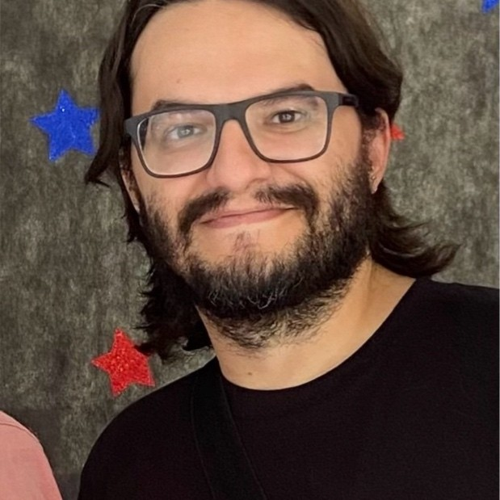

Vinicius Cunha

- Desenvolvedor Web | HTML | CSS | JavaScript | React.js | Node.js | MySQL
- São Paulo, Brasil
Informações de contato
Sobre mim
Tenho experiência profissional de 10 anos em áreas administrativas, e estou em transição de carreira para o campo de TI. Acredito que com tecnologia e criatividade é possível criar e melhorar projetos em qualquer área de atuação.
No último ano adquiri experiência prática significativa em front-end e back-end, utilizando tecnologias como HTML, CSS, JavaScript, React, Docker, MySQL, Node.js, Express, TypeScript e Python, no curso de Desenvolvimento Web Full Stack da Trybe.
Estou no último ano do Bacharelado em Tecnologia da Informação, aprimorando meu conhecimento teórico e criando bases mais sólidas para atuação neste mercado.
Meus interesses são sobre ciência, educação, lógica, matemática, organização, produtividade, entre outros. Sou bastante curioso e gosto de aprender coisas novas. Me considero organizado e me comunico de forma gentil e objetiva.
Experiência profissional
- Estagiário em Automação de Processos
- BTG Pactual, Estágio (Remoto)
- jan de 2022 - mai de 2022 (5 meses)
- Estagiário em Segurança da Informação
- Bradesco, Estágio (Remoto)
- mai de 2021 - nov de 2021 (7 meses)
- Secretário
- Faculdade de Odontologia da USP, Tempo integral (Presencial)
- ago de 2013 - ago de 2019 (6 anos e 1 mês)
Formação acadêmica
- Bacharelado em Tecnologia da Informação
- Universidade Virtual do Estado de São Paulo (Univesp)
- 2020 - 2024 (Cursando)
- Desenvolvimento Web Full Stack
- Trybe
- 2022 - 2023
- Licenciatura em Matemática
- Instituto de Matemática e Estatística da USP
- 2011 - 2013 (Graduação interrompida)
Competências e Habilidades
- Inglês básico-intermediário
- Git
- GitHub
- HTML
- CSS
- JavaScript
- Jest
- React.js
- React Testing Library
- Node.js
- Mocha
- Chai
- Sinon
- MySQL
- TypeScript
- POO
- Python
- Flask
- Django
- Pytest